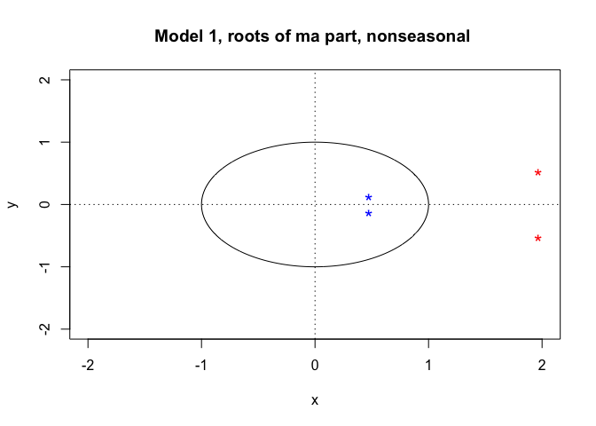
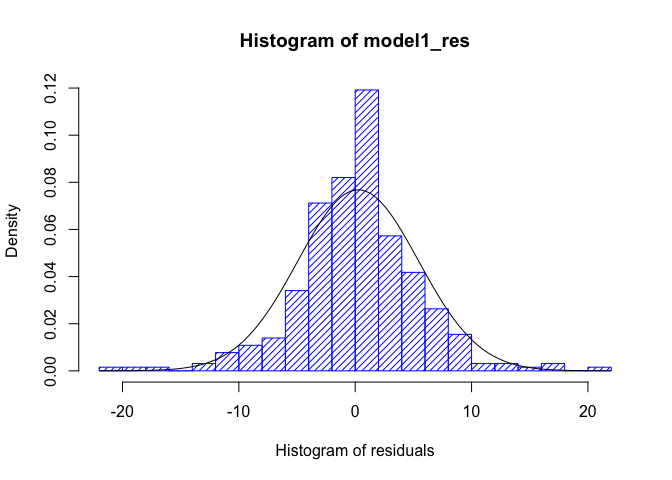
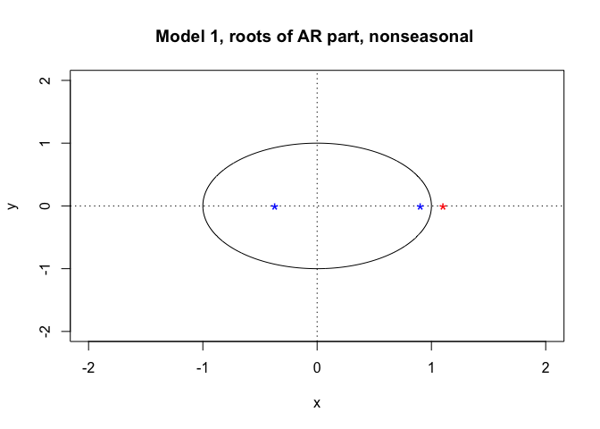

Abstract
Introduction
The Hospitality Industry
The hospitality industry, using the definition from wikipedia, is a broad category of fields within the service industry that includes lodging, food and drink service, event planning, theme parks, travel and tourism. It includes hotels, tourism agencies, restaurants and bars. As of 2020,, the United States Department of Labor Standard Industrial Classification (SIC) defines the hospitality industry more broadly, including
- Hotels and Motels
- Eating and Drinking Places
- Arrangement of Passenger Transportation like travel agencies
The entire industry worth more than 500 billion dollars. Thus it is important to make a meaningful forcast to its components and learn insights about it. Therefore, I would dedicate this project to forcast the total number of employees across time.
The Dataset.
I obtained this dataset from Kaggle. This is a simple dataset consisting of just two columns, the first column is Date, which takes record monthly from January 1st, 1990 to December 1st, 2018. The second column is the # Employees, which is the Average of employees each month (in thousands). There are a total of 348 valid rows.
Techniques
In the entire process of forcasting, I used techniques taught in my PSTAT 174/274 class including
- Visualization techniques
- transformation
- differencing
- Model identification
- acf/pacf discussion
- Model estimation
- Check of stationarity/invertibility
- Diagnostic Checking
- Forecasting
Results and Conclusions
The Forcasting
Plot and analyze the time series.
We will first set the working directory and load the dataset
setwd("/Users/teo/Desktop/pstat-174-final-project")
set.seed(1205)hos <- read.csv("data/HospitalityEmployees.csv")
employees <- hos$Employees
nt <- length(employees)
tsdat <- ts(employees, start = c(1990,1), end = c(2018,12), frequency = 12)
ts.plot(tsdat, main = "Raw Data")
abline(h=mean(employees), col="blue")
Some immediate obseravtion of this dataset is that:
- there is a linearity in the dataset
- there is also an obvious seasonality
- We have relatively constant variance (ignoring the abnormality in 2008) and a non-constant mean
more specifically, we witness a drop of employees in 2008-2009, which is probably due to the global economic crisis that took place in 2008.
Now we partition the data into a training and testing set. And we leave 24 data points for verification.
employees.training <- employees[c(1:323)]
employees.test <- employees[c(324:348)]
plot.ts(employees.training)
fit <- lm(employees.training ~ as.numeric(1:length(employees.training)))
abline(fit, col="red")
abline(h=mean(employees), col="blue")
Histogram
And we will also plot out the histogram to verify the variance
hist(employees.training, col="light blue", xlab="", main="histogram; employee data")And indeed, we see that the histogram skewed a little. And we can treat it as constant variance. So we dont need a transformation.
Histogram of Raw Data
We also plot out the ACF to check seasonality and trend
acf(employees.training,lag.max=40, main="ACF of the Airpass Data")
And indeed, ACFs remain large and periodic (a little), so we might consider differencing.
Transformation and Differencing
Transformation
As stated in the previous section, no transformation required for this dataset
Differencing
We will first make a decomposition of the time series
library(ggplot2)
library(ggfortify)
y <- ts(employees.training, frequency = 12)
decomp <- decompose(y)
plot(decomp)we see that a decomposition of the time series shows seasonality and a linear trend, despite a small drop at 2008-2009. Therefore, we will difference the data.
var(employees.training)[1]## [1] 48721.73Our time series has variance of 40626.52, now differencing at lag 12
employees_lag12 <- diff(employees.training,lag = 12)
plot.ts(employees_lag12, main="U_t differenced at lag 12")
fit <- lm(employees_lag12 ~ as.numeric(1:length(employees_lag12)))
abline(fit, col="red")
abline(h=mean(employees_lag12), col="blue")
var(employees_lag12)## [1] 1024.479And now the variance is 979, which is significantly lower. But we still have large variance and a non-zero mean. The ACF of the differenced series at lag 12 looks like
acf(employees_lag12, lag.max=40, main="ACF of the U_t, differenced at lag 12")
We see that seasonality no longer apparent, and the ACFs are decaying slowly, meaning that the series is still non stationary.
We continue differencing at lag 1,
employees_stat <- diff(employees_lag12,lag = 1)
plot.ts(employees_stat, main="U_t differenced at lag 12 & lag 1")
fit <- lm(employees_stat ~ as.numeric(1:length(employees_stat)))
abline(fit, col="red")
abline(h=mean(employees_stat), col="blue")var(employees_stat)## [1] 46.56826We see that now the variance is only 47.71, and the plot looks stationary, with constant mean and variance and looks like white noise. So we achieved our purpose. We further verify this observation by historgram.
hist(employees_stat, density=20,breaks=20, col="blue", xlab="", prob=TRUE)
m<-mean(employees_stat)
std<- sqrt(var(employees_stat))
curve( dnorm(x,m,std), add=TRUE )
The histogram looks much more normal. We will show the ACF and PACF on the next section.
Plot and analyze ACF and PACF to preliminary identify your models
acf(employees_stat, lag.max=40, main="ACF of the U_t, differenced at lags 12 and 1")
The ACFs outside of of the confidence interval are at lag 2, 5, 12
pacf(employees_stat, lag.max=40, main="PACF of the U_t, differenced at lags 12 and 1")
The PACFs outside of of the confidence interval are at lag 2, 5, 12, 22, 24. We can choose model parameters as follows. Notice that there seem to be an exponential decay at lag 12, 24, 36, so we choose Q = 0
p = 0, 2, 5 d = 1 q = 0, 2, 5 P = 1 D = 1 Q = 0 s = 12
Model Fitting
Our strategy of finding two best models is to run a loop for all parameters and sort out the two models with Lowest AICc value.
library(qpcR)## Loading required package: MASS
## Loading required package: minpack.lm
## Loading required package: rgl
## Loading required package: robustbase
## Loading required package: Matrixprint("p d q P D Q")## [1] "p d q P D Q"for (p in c(0,2,5)){
for (d in c(1)){
for (q in c(0,2,5)){
for (P in c(0,1)){
for (D in c(1)){
for (Q in c(0,1)){
print(c(p,d,q,P,D,Q))
print(AICc(arima(employees.training,order = c(p,d,q),seasonal = list(order = c(P,D,Q), period = 12), method="ML")))
}
}
}
}
}
}## [1] 0 1 0 0 1 0
## [1] 2071.736
## [1] 0 1 0 0 1 1
## [1] 1964.109
## [1] 0 1 0 1 1 0
## [1] 2005.71
## [1] 0 1 0 1 1 1
## [1] 1965.466
## [1] 0 1 2 0 1 0
## [1] 2069.902
## [1] 0 1 2 0 1 1
## [1] 1957.807
## [1] 0 1 2 1 1 0
## [1] 1998.389
## [1] 0 1 2 1 1 1
## [1] 1959.746
## [1] 0 1 5 0 1 0
## [1] 2068.476
## [1] 0 1 5 0 1 1
## [1] 1951.655
## [1] 0 1 5 1 1 0
## [1] 1994.53
## [1] 0 1 5 1 1 1
## [1] 1953.647
## [1] 2 1 0 0 1 0
## [1] 2068.952
## [1] 2 1 0 0 1 1
## [1] 1955.055
## [1] 2 1 0 1 1 0
## [1] 1996.201
## [1] 2 1 0 1 1 1
## [1] 1957.103
## [1] 2 1 2 0 1 0
## [1] 2069.071
## [1] 2 1 2 0 1 1
## [1] 1935.809
## [1] 2 1 2 1 1 0
## Warning in log(s2): NaNs produced
## [1] 1987.449
## [1] 2 1 2 1 1 1
## [1] 1937.051
## [1] 2 1 5 0 1 0
## [1] 2051.824
## [1] 2 1 5 0 1 1
## [1] 1940.756
## [1] 2 1 5 1 1 0
## [1] 1986.338
## [1] 2 1 5 1 1 1
## [1] 1942.19
## [1] 5 1 0 0 1 0
## [1] 2066.573
## [1] 5 1 0 0 1 1
## [1] 1943.759
## [1] 5 1 0 1 1 0
## [1] 1988.936
## [1] 5 1 0 1 1 1
## [1] 1945.227
## [1] 5 1 2 0 1 0
## [1] 2068.298
## [1] 5 1 2 0 1 1
## [1] 1941.005
## [1] 5 1 2 1 1 0
## [1] 1988.373
## [1] 5 1 2 1 1 1
## [1] 1942.421
## [1] 5 1 5 0 1 0
## [1] 2035.202
## [1] 5 1 5 0 1 1
## Warning in log(s2): NaNs produced
## [1] 1942.859
## [1] 5 1 5 1 1 0
## [1] 1981.359
## [1] 5 1 5 1 1 1
## [1] 1946.23Below are three models with the least AICc values, we can see that there AICc values are very close, and parameters are also similar.
\[ \\operatorname{SARIMA}(5,1,2)\\times(0,1,1)\_{12}\\\\ \\operatorname{SARIMA}(2,1,2)\\times(0,1,1)\_{12}\\\\ \]
Model 1 SARIMA (5,1,2) × (1,1,0)12
model1 <- arima(employees.training,order = c(5,1,2),seasonal = list(order = c(0,1,1), period = 12), method="ML")
model1##
## Call:
## arima(x = employees.training, order = c(5, 1, 2), seasonal = list(order = c(0,
## 1, 1), period = 12), method = "ML")
##
## Coefficients:
## ar1 ar2 ar3 ar4 ar5 ma1 ma2 sma1
## 0.8938 -0.0710 -0.0136 0.0108 0.0732 -0.9494 0.2416 -0.7474
## s.e. 0.7132 0.4798 0.1344 0.0810 0.0841 0.7145 0.5126 0.0438
##
## sigma^2 estimated as 28.02: log likelihood = -961.27, aic = 1940.55And we see that 0 is in the confidence interval of ar2, ar3, ar4, ar5, ma2, so we run
AICc(model1)## [1] 1941.005AICc(arima(employees.training,order = c(5,1,2),seasonal = list(order = c(0,1,1), period = 12), method="ML",fixed= c(NA,0,0,0,0,NA,0,NA)))## Warning in arima(employees.training, order = c(5, 1, 2), seasonal = list(order =
## c(0, : some AR parameters were fixed: setting transform.pars = FALSE
## Warning in log(s2): NaNs produced
## [1] 1942.025But this does not decrease the AICc, so we will stick to our original model.
Model 2 SARIMA (2,1,2) × (1,1,0)12
model2 <- arima(employees.training,order = c(2,1,2),seasonal = list(order = c(1,1,0), period = 12), method="ML")## Warning in log(s2): NaNs producedmodel2##
## Call:
## arima(x = employees.training, order = c(2, 1, 2), seasonal = list(order = c(1,
## 1, 0), period = 12), method = "ML")
##
## Coefficients:
## ar1 ar2 ma1 ma2 sar1
## 0.5338 0.3358 -0.5788 -0.1315 -0.5004
## s.e. 0.3456 0.3175 0.3638 0.3059 0.0499
##
## sigma^2 estimated as 33.88: log likelihood = -987.63, aic = 1987.26And we see that 0 is in the confidence interval of ma2, so we run
AICc(model2)## [1] 1987.449AICc(arima(employees.training,order = c(2,1,2),seasonal = list(order = c(1,1,0), period = 12),fixed = c(NA,NA,0,0,NA), method="ML"))## [1] 1996.315Again, fixing parameter did not decrease AICc, so we will stick to our original model.
Diagonstics for model 1
The equation for the first model is
(1−ϕ1B−ϕ2B2−ϕ3B3−ϕ4B4−ϕ5B5)(1−Φ1B12)(1−B)(1−B12)yt = (1+θ1B+θ2B2)Zt
substituting the parameters, we have
(1−0.8938B+0.0710B2+0.0136B3−0.0108B4−0.0732B5)(1+0.7474B12)(1−B)(1−B12)yt = (1−0.9494B+0.2416B2)Zt
Stationarity
source("plot.roots.R")
plot.roots(NULL,polyroot(c(1, -0.8398, 0.0710, 0.0136,-0.0108,-0.0732)), main="Model 1, roots of AR part, nonseasonal ")Clearly, all AR roots are outside of unit circle, but we also have |Φ1| < 1 so the model is stationary.
Invertibility
plot.roots(NULL,polyroot(c(1, -0.9494,0.2416)), main="Model 1, roots of ma part, nonseasonal ")
Clearly, all MA (seasonal and non seasonal) roots are outside of unit circle, so the model is invertible.
Analyzing the Residues
We first look at the histogram of the Residues
model1_res <- residuals(model1)
hist(model1_res,density=20,breaks=20, col="blue", xlab="Histogram of Residues", prob=TRUE)
m1 <- mean(model1_res)
std1 <- sqrt(var(model1_res))
curve(dnorm(x,m1,std1), add=TRUE )
Which looks pretty normal, despite a larger peak at the center. Next we will plot out the Residues
mean(model1_res)## [1] 0.2589183plot.ts(model1_res)
fit_res_1 <- lm(model1_res ~ as.numeric(1:length(model1_res)))
abline(fit_res_1, col="red")
abline(h=mean(model1_res), col="blue")The mean is just 0.25 which is very close to 0.
Now we plot out a QQ Plot for the Residues
qqnorm(model1_res,main= "Normal Q-Q Plot for Model 1")
qqline(model1_res,col="blue")
which aligns quite well on a straight line.
We see that from the above plots, there is no trend, and no visible change of variance, and no seasonality, and the sample mean = 0.25 is almost zero. The histogram and the QQ plot looks okay.
Now, we will plot out ACF and PACF of the Residues
acf(model1_res, lag.max=40)
pacf(model1_res, lag.max=40)All acf and pacf of residuals are within confidence intervals (except acf at lag 15 and 21 but they are negiglible) and can be counted as zeros.
Now we will check if this model can pass the tests.
Shapiro-Wilk Normality Test
shapiro.test(model1_res)##
## Shapiro-Wilk normality test
##
## data: model1_res
## W = 0.9643, p-value = 4.028e-07Since the p-value is within the significant level, the model fails the shapiro wilk normality test.
Box-Pierce test
With degree of freedom 12 − (5+2) = 7,
Box.test(model1_res, lag = 12, type = c("Box-Pierce"), fitdf = 7)##
## Box-Pierce test
##
## data: model1_res
## X-squared = 5.4354, df = 5, p-value = 0.3651We see that the model passes the Box-Pierce test, p-value is larger than significant level
Box-Ljung test
Box.test(model1_res, lag = 12, type = c("Ljung-Box"), fitdf = 7)##
## Box-Ljung test
##
## data: model1_res
## X-squared = 5.6024, df = 5, p-value = 0.3468We see that the model passes the Box-Ljung test, p-value is larger than significant level.
Mc-Leod Li test
Box.test((model1_res)^2, lag = 12, type = c("Ljung-Box"), fitdf = 0)##
## Box-Ljung test
##
## data: (model1_res)^2
## X-squared = 45.324, df = 12, p-value = 9.069e-06the model fails the mc-leod Li test.
Yule-Walker (or MLE) estimation
ar(model1_res, aic = TRUE, order.max = NULL, method = c("yule-walker"))##
## Call:
## ar(x = model1_res, aic = TRUE, order.max = NULL, method = c("yule-walker"))
##
##
## Order selected 0 sigma^2 estimated as 26.95Fitted residuals to AR(0), i.e. WN.
So the model passes all the test but mc-leod Li and Shapiro-Wilk Normality Test
Diagonstics for model 2
The equation for the second model is
(1−ϕ1B−ϕ2B2)(1−Φ12B12)(1−L)(1−B12)yt = (1+θ1B+θ2B2)Zt
substituting the parameters, we have
(1−0.5338B−0.3358B2)(1+0.5004B12)(1−L)(1−B12)yt = (1−0.5788B−0.1315B2)Zt
Stationarity
plot.roots(NULL,polyroot(c(1, -0.5338, -0.3358)), main="Model 1, roots of AR part, nonseasonal ")
Clearly, all AR roots are outside of unit circle, but we also have |Φ1| < 1 so the model is stationary.
Invertibility
plot.roots(NULL,polyroot(c(1, -0.5788,-0.1315)), main="Model 1, roots of MA part, nonseasonal ")
Clearly, all MA roots are outside of unit circle, so the model is invertible.
Analyzing the Residues
We first look at the histogram of the Residues
model2_res <- residuals(model2)
hist(model2_res,density=20,breaks=20, col="blue", xlab="Histogram of Residues", prob=TRUE)
m1 <- mean(model2_res)
std1 <- sqrt(var(model2_res))
curve(dnorm(x,m1,std1), add=TRUE )Which looks pretty normal, despite a larger peak at the center. Next we will plot out the Residues
mean(model2_res)## [1] 0.1359044plot.ts(model2_res)
fit_res_1 <- lm(model2_res ~ as.numeric(1:length(model2_res)))
abline(fit_res_1, col="red")
abline(h=mean(model2_res), col="blue")
The mean is just 0.135 which is very close to 0.
Now we plot out a QQ Plot for the Residues
qqnorm(model2_res,main= "Normal Q-Q Plot for Model 1")
qqline(model2_res,col="blue")which aligns quite well on a straight line.
We see that from the above plots, there is no trend, and no visible change of variance, and no seasonality, and the sample mean = 0.13 is almost zero. The histogram and the QQ plot looks okay.
Now, we will plot out ACF and PACF of the Residues
acf(model2_res, lag.max=40)
pacf(model2_res, lag.max=40)All acf and pacf of residuals are within confidence intervals (except at lag 12 and 24), this means that there is seasonality in the residues.
Now we will check if this model can pass the tests.
Shapiro-Wilk Normality Test
shapiro.test(model2_res)##
## Shapiro-Wilk normality test
##
## data: model2_res
## W = 0.9668, p-value = 9.534e-07Since the p-value is within the significant level, the model fails the shapiro wilk normality test.
Box-Pierce test
With degree of freedom 12 − (5+2) = 7,
Box.test(model2_res, lag = 12, type = c("Box-Pierce"), fitdf = 4)##
## Box-Pierce test
##
## data: model2_res
## X-squared = 16.06, df = 8, p-value = 0.04152We see that the model fails the Box-Pierce test
Box-Ljung test
Box.test(model2_res, lag = 12, type = c("Ljung-Box"), fitdf = 4)##
## Box-Ljung test
##
## data: model2_res
## X-squared = 16.595, df = 8, p-value = 0.03461We see that the model fails the Box-Ljung test.
Mc-Leod Li test
Box.test((model2_res)^2, lag = 12, type = c("Ljung-Box"), fitdf = 0)##
## Box-Ljung test
##
## data: (model2_res)^2
## X-squared = 69.624, df = 12, p-value = 3.766e-10the model fails the mc-leod Li test.
Yule-Walker (or MLE) estimation
ar(model2_res, aic = TRUE, order.max = NULL, method = c("yule-walker"))##
## Call:
## ar(x = model2_res, aic = TRUE, order.max = NULL, method = c("yule-walker"))
##
## Coefficients:
## 1 2 3 4 5 6 7 8
## -0.0179 -0.0146 -0.0153 0.0003 0.0676 0.0636 -0.0170 0.0557
## 9 10 11 12 13 14 15 16
## 0.0711 0.0177 0.0014 -0.1784 -0.0092 -0.0107 0.1019 -0.0223
## 17 18 19 20 21 22 23 24
## 0.0121 -0.0302 -0.0697 0.0228 0.0789 -0.0331 -0.0177 -0.2693
##
## Order selected 24 sigma^2 estimated as 30.04Did not fitted residuals to AR(0), i.e. WN.
So the model 2 fails all the tests
Conclusion for diagnostics
We have model 1 passes all the test but Mc-leod Li and Shapiro-Wilk Normality Test. And model 2 fails all the tests. Notice that
Besides model 1, and model 2, I have ran the diagnostics with all top 10 models with lowest AICc values and none of them passes the Mc-Leod Li test and the Shapiro-Wilk Normality Test. This may due to the fact that there is a sequence of anomaly datapoint between 2008 and 2009, causing deviation in fitting the model, and therefore failing the Mc-leod Li and Shapiro-Wilk Normality Test.Therefore, I will choose model 1 as my final model, since it has a lowest AICc value, and passes most of the tests.
\[ \\operatorname{SARIMA}(5,1,2)\\times(0,1,1)\_{12}\\\\ \]
as our final model, where
(1−0.8938B+0.0710B2+0.0136B3−0.0108B4−0.0732B5)(1+0.7474B12)(1−B)(1−B12)yt = (1−0.9494B+0.2416B2)Zt
Forcasting with final model
Now we will try to forecast two year (24 datapoints) using our final model, we use red circles to denote the forecast values and blue dashed lines as our confidence interval
library(forecast)## Registered S3 method overwritten by 'quantmod':
## method from
## as.zoo.data.frame zoo
## Registered S3 methods overwritten by 'forecast':
## method from
## autoplot.Arima ggfortify
## autoplot.acf ggfortify
## autoplot.ar ggfortify
## autoplot.bats ggfortify
## autoplot.decomposed.ts ggfortify
## autoplot.ets ggfortify
## autoplot.forecast ggfortify
## autoplot.stl ggfortify
## autoplot.ts ggfortify
## fitted.ar ggfortify
## fortify.ts ggfortify
## residuals.ar ggfortifypred.tr <- predict(model1, n.ahead = 24)
U.tr= pred.tr$pred + 2*pred.tr$se
L.tr= pred.tr$pred - 2*pred.tr$se
ts.plot(employees.training, xlim=c(1,length(employees.training)+12), ylim = c(min(employees.training),max(U.tr)))
lines(U.tr, col="blue", lty="dashed")
lines(L.tr, col="blue", lty="dashed")
points((length(employees.training)+1):(length(employees.training)+24), pred.tr$pred, col="red")
Which looks pretty good, we can further verify if our testing data is within the confidence interval with a zoomed view.
ts.plot(employees, xlim = c(240,length(employees.training)+24), ylim = c(1400,max(U.tr)), col="red")
lines(U.tr, col="blue", lty="dashed")
lines(L.tr, col="blue", lty="dashed")
points((length(employees.training)+1):(length(employees.training)+24), pred.tr$pred , col="black")
As we can see, the forecast values are now black circles, and the red line is the true values. We see that the test set is within the confidence interval. Even though that the model constantly underestimated the values in the forecast.